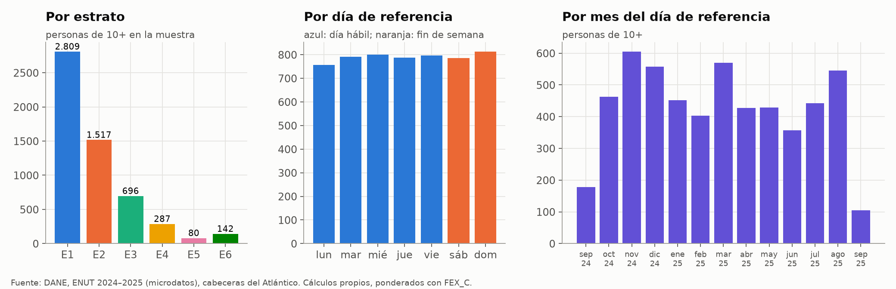
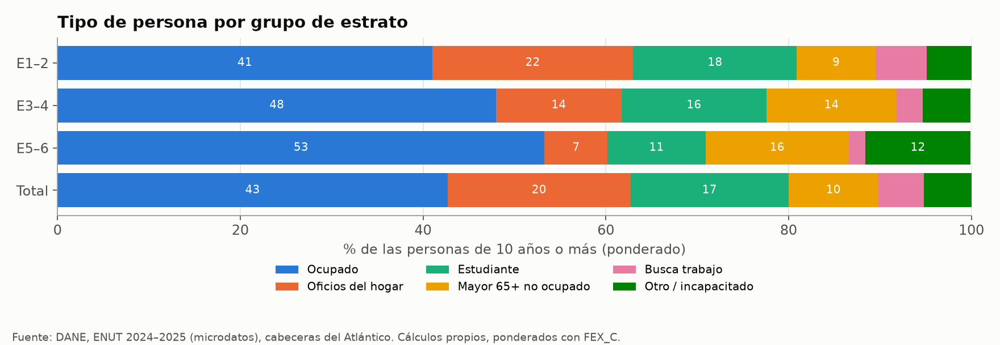
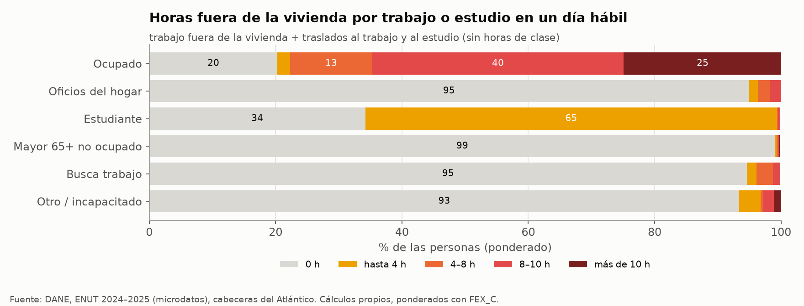
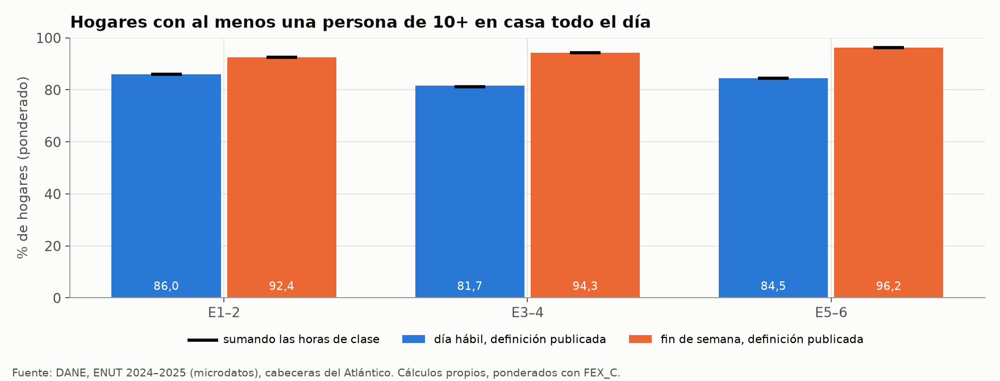
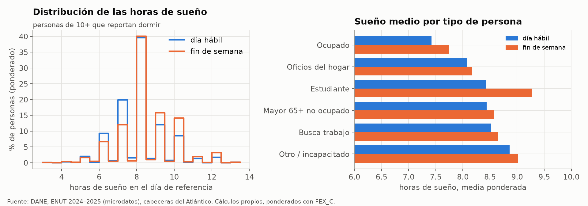
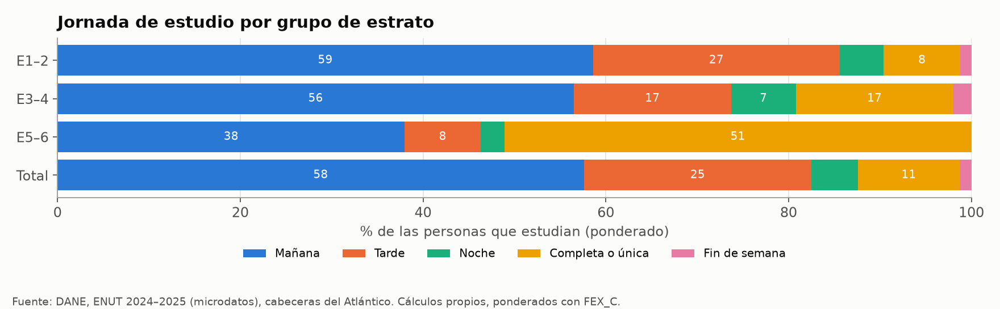

Encuesta Nacional de Uso del Tiempo (ENUT)#
La ENUT 2024–2025 es la fuente de la tesis sobre quién está en la vivienda y cuánto duerme cada persona, que son las dos piezas del modelo de ocupación de la Fase 2 (paso 3). Este capítulo describe la encuesta, muestra su análisis exploratorio en el dominio que usa la tesis, las cabeceras del Atlántico, y explica paso a paso cómo se convierte en los insumos de la Tabla 12. Las cifras salen de scripts/eda/enut.py, que lee los microdatos directo del zip del DANE y escribe las figuras figuras/eda/enut_*.png y las tablas tablas/eda/enut_*.csv. Ese script reproduce el procesamiento original de scripts/enut.py, scripts/enut_out.py y scripts/enut_stats.py, y todas las cifras ya publicadas en el libro salen iguales.
Qué es#
La ENUT es la encuesta del DANE que mide el tiempo que las personas dedican a cada actividad, pagada o no, en un día de referencia (DANE, 2025a). La tesis usa la edición 2024–2025 (catálogo 910 del DANE). Cada persona de 10 años o más declara cuántas horas y minutos dedicó el día anterior a la entrevista a dormir, comer, asearse, cocinar, trabajar, desplazarse, estudiar, ver televisión y otras actividades, y el resto de los módulos describe la vivienda, el hogar, la educación y el trabajo de cada persona. La encuesta registra duraciones y no horarios, de modo que dice cuánto tiempo pasa una persona fuera de la vivienda pero no a qué hora sale ni a qué hora vuelve.
Como en las demás encuestas de hogares del DANE, cada registro trae un factor de expansión (FEX_C) que indica cuántas viviendas, hogares o personas de la población representa. Las cifras de este capítulo están ponderadas con ese factor y los tamaños de muestra se reportan sin ponderar, como fija la sección de principios generales de Metodología.
Cobertura y estructura#
El zip del DANE (BDATOS-ENUT-2024_2025.zip, 92,5 MB) trae diez módulos, cada uno en CSV, Stata y SPSS. La tesis lee los CSV, separados con «;», con coma decimal en el factor de expansión y con los nombres de las columnas en mayúscula, salvo el factor del módulo C6, que viene como fex_c. La Tabla 27 resume los módulos y los que usa la tesis.
Módulo |
Unidad |
Llave |
Contenido usado |
Uso en la tesis |
|---|---|---|---|---|
C1 |
Vivienda |
DIRECTORIO |
Departamento, clase (cabecera o resto), estrato, día de referencia |
Dominio, estrato y día de la semana |
C2 |
Hogar |
DIRECTORIO + SECUENCIA_P |
Bienes (lavadora, secadora, nevera), personas del hogar, factor del hogar |
Peso de los hogares, cruce de la nevera con la ECV |
C3 |
Persona |
DIRECTORIO + SECUENCIA_P + ORDEN |
Edad, sexo, parentesco, factor de la persona |
Edad y peso de cada persona |
C6 |
Persona |
Ídem |
Asistencia escolar, jornada, asistencia a clase y traslado al estudio |
Estudiantes y tiempo de traslado |
C7 |
Persona |
Ídem |
Actividad principal de la semana |
Tipo de persona |
C7_1 |
Persona ocupada |
Ídem |
Lugar de trabajo, horas de trabajo del día, traslado al trabajo |
Tiempo fuera por trabajo |
C8 |
Persona de 10+ |
Ídem |
Duración de cada actividad en el día de referencia |
Sueño, descanso, TV y demás duraciones |
C4, C5 y C9 |
Persona |
Ídem |
No se usan |
— |
El día de referencia viene en DIA_REF como número de días desde el 1 de enero de 1970. En toda la encuesta va del 3 de septiembre de 2024 al 1 de noviembre de 2025, y en las cabeceras del Atlántico, del 17 de septiembre de 2024 al 13 de septiembre de 2025. La encuesta no identifica el municipio, solo el departamento y la clase, así que el dominio más cercano a Barranquilla es el de las cabeceras del Atlántico, que incluye también a Soledad, Malambo, Puerto Colombia y las demás cabeceras (Encuestas usadas y representatividad).
De las 66.565 viviendas de la muestra nacional, 2.496 son del Atlántico, 1.869 de ellas en cabecera. En ese dominio hay 1.894 hogares y 6.347 personas, de las cuales 5.533 tienen 10 años o más y responden el módulo de uso del tiempo. Expandidas, representan 756.710 hogares y 2.739.561 personas, las mismas cifras de la Tabla 56. La Tabla 28 reparte esa muestra por estrato. Más de la mitad de las personas de 10 años o más de la muestra son del estrato 1, y los estratos 5 y 6 juntos suman 79 hogares, por lo que la tesis agrupa los estratos de dos en dos.
Estrato |
Viviendas |
Hogares |
Personas |
Personas de 10+ |
Hogares expandidos |
Personas expandidas |
% de las personas |
|---|---|---|---|---|---|---|---|
E1 |
934 |
951 |
3.320 |
2.809 |
402.411 |
1.515.986 |
55,3 |
E2 |
504 |
508 |
1.710 |
1.517 |
188.057 |
680.275 |
24,8 |
E3 |
242 |
245 |
769 |
696 |
91.814 |
317.868 |
11,6 |
E4 |
109 |
110 |
314 |
287 |
40.618 |
122.445 |
4,5 |
E5 |
29 |
29 |
86 |
80 |
12.098 |
37.292 |
1,4 |
E6 |
50 |
50 |
146 |
142 |
21.191 |
64.653 |
2,4 |
Sin dato (código 9) |
1 |
1 |
2* |
2* |
521 |
1.042 |
0,0 |
Total |
1.869 |
1.894 |
6.347 |
5.533 |
756.710 |
2.739.561 |
100,0 |
*Celda con menos de 10 personas de muestra.
Variables que usa la tesis#
La Tabla 29 lista las variables que entran al procesamiento. Las etiquetas siguen los metadatos DDI del catálogo, como en Metodología, salvo las de P1160, que se infieren de los datos (ver la última sección).
Código (módulo) |
Pregunta o contenido |
Uso en el modelo |
|---|---|---|
|
Departamento y clase (1 = cabecera) |
Filtro del dominio: DPTO = 08 y CLASE = 1 |
|
Día de referencia, en días desde el 1-ene-1970 |
Fecha, día de la semana, día hábil o fin de semana |
|
Estrato de la vivienda para la tarifa de energía |
Grupos de estrato 1–2, 3–4 y 5–6 |
|
Factor de expansión del hogar y de la persona |
Ponderación |
|
Edad en años |
Universo de 10+ y mayores de 65 años |
|
Actividad en que ocupó la mayor parte del tiempo la semana pasada |
Tipo de persona |
|
Dónde realiza principalmente su trabajo; 2 = en su vivienda |
Trabajo en la vivienda |
|
Horas y minutos trabajados el día de referencia en el empleo principal, el segundo empleo y la ayuda en un negocio |
Tiempo fuera por trabajo |
|
Tiempo de ida al trabajo principal y al segundo |
Traslados (ida y vuelta) |
|
Asiste a una institución educativa y en qué jornada |
Estudiantes y jornada de estudio |
|
Tiempo de ida al centro educativo |
Traslados al estudio |
|
Asistió a clase el día de referencia y cuánto tiempo (inferido) |
Sensibilidad de la presencia diurna |
|
Horas y minutos de sueño |
Sueño por tipo de persona y día |
|
Comer, asearse, descansar, cocinar, TV, internet y demás duraciones |
Horas por actividad (tabla publicada) |
|
Lavadora, secadora y nevera del hogar, personas del hogar |
Cruce con la ECV (Tabla 70) |
Análisis exploratorio#
Muestra por estrato y por día de referencia#
Los días de referencia se reparten de forma pareja entre los siete días de la semana, con entre 757 y 813 personas de 10 años o más por día (Figura 25). Así, 28,9 % de las personas-día de la muestra son de fin de semana, muy cerca de los 2/7 del calendario, y el contraste entre día hábil y fin de semana tiene muestra suficiente en los grupos de estrato 1–2 y 3–4. En el grupo 5–6, en cambio, hay solo 15 personas con día de referencia en jueves y 222 en total. Por mes, la muestra va de 105 a 605 personas, porque septiembre aparece dos veces incompleto (al comienzo y al final del periodo) y los demás meses no tienen el mismo número de entrevistas. Por eso la ENUT no se usa para comparar meses.


Figura 25 Personas de 10 años o más en la muestra de las cabeceras del Atlántico por estrato, por día de la semana y por mes del día de referencia.#
Tipo de persona#
La composición de las personas de 10 años o más cambia con el estrato en la dirección esperada (Figura 26). Los ocupados pasan de 41,0 % en los estratos 1–2 a 53,3 % en los estratos 5–6, los mayores de 65 años no ocupados de 8,6 % a 15,7 %, y quienes se dedican a los oficios del hogar bajan de 22,0 % a 6,9 %. Estas son las cifras de la Tabla 12, que el script reproduce sin diferencias. Para el modelo, la consecuencia es que en los estratos bajos hay más adultos que pasan el día en la vivienda, aunque también hay más estudiantes que salen a estudiar.


Figura 26 Tipo de persona de las personas de 10 años o más por grupo de estrato, en porcentaje ponderado.#
Tiempo fuera de la vivienda#
El tiempo fuera de la vivienda por trabajo o estudio separa con claridad a los ocupados del resto (Figura 27). En un día hábil, 25,0 % de los ocupados pasa más de 10 horas fuera y 39,8 % entre 8 y 10 horas, con una media de 7,7 horas, mientras que 20,3 % no sale por trabajo, sea porque trabaja en su vivienda o porque ese día no trabajó. Entre las personas dedicadas a los oficios del hogar, los mayores de 65 años no ocupados y quienes buscan trabajo, entre 95 % y 99 % no salen por estas razones. Los estudiantes aparecen casi todos en el tramo de hasta 4 horas porque la definición publicada solo suma sus traslados y no las horas de clase. En el fin de semana, la media de los ocupados baja a 4,9 horas y 46,6 % de ellos no sale por trabajo.


Figura 27 Personas de 10 años o más por tramo de horas fuera de la vivienda por trabajo o estudio en un día hábil, según el tipo de persona.#
Presencia en el hogar#
En 85,2 % de los hogares hay al menos una persona de 10 años o más que no sale de la vivienda por trabajo ni por estudio en un día hábil, y en 92,9 % en el fin de semana (Figura 28). Por grupo de estrato, las cifras son las de la Tabla 12: 86,0 %, 81,7 % y 84,5 % en día hábil. Las diferencias entre grupos son pequeñas frente a la muestra, que en el grupo 5–6 es de 54 hogares en día hábil y 25 en fin de semana. Sumar las horas de clase de los estudiantes casi no cambia este resultado, porque en los hogares con estudiantes casi siempre queda otro adulto en la vivienda. La vivienda que se queda sola durante el día es la excepción, de modo que la carga de A/C diurna depende más de las habitaciones que se ocupan que de si la vivienda está ocupada.


Figura 28 Hogares con al menos una persona de 10 años o más en casa todo el día, por grupo de estrato y tipo de día, con la definición publicada y sumando las horas de clase.#
Sueño#
Las personas de 10 años o más duermen en promedio 7,95 horas en día hábil y 8,29 en fin de semana. Las respuestas se concentran en horas enteras, sobre todo en 8 horas, que reúnen cerca de 40 % de las personas en ambos tipos de día (Figura 29). Los ocupados son los que menos duermen, con 7,4 horas en día hábil, y los estudiantes los que más alargan el sueño en el fin de semana, de 8,4 a 9,3 horas. Por grupo de estrato, el sueño medio en día hábil baja de 8,0 horas en los estratos 1–2 a 7,6 en los estratos 5–6. La Tabla 12 da 8,1, 7,9 y 7,8 horas porque promedia todos los días de la semana. Como la ENUT no dice a qué hora empieza el sueño, estas duraciones fijan la longitud del bloque nocturno de ocupación del dormitorio, pero no su posición en el día.


Figura 29 Distribución de las horas de sueño en día hábil y fin de semana, y sueño medio por tipo de persona.#
Jornada de estudio#
La jornada de estudio es la única información de la ENUT que se refiere a una hora del día. De las 1.564 personas de la muestra que estudian, 57,6 % lo hace en la mañana, 24,9 % en la tarde, 11,1 % en jornada completa o única, 5,1 % en la noche y 1,3 % en el código 5 de P1101, que se interpretó como fin de semana sin poder verificar la etiqueta. La jornada de la tarde es propia de los estratos bajos, con 27,0 % en los estratos 1–2 frente a 8,3 % en los estratos 5–6, donde predomina la jornada única (Figura 30). En un día hábil, 62,8 % de quienes estudian asistió a clase el día de referencia, con una duración media de 5,6 horas. El valor de los estratos 5–6 se apoya en 43 estudiantes y debe leerse como indicativo.


Figura 30 Jornada de estudio de las personas que asisten a una institución educativa, por grupo de estrato.#
Lo que la ENUT no permite: el perfil horario#
La ENUT 2024–2025 no tiene un diario de actividades por franjas horarias. El módulo C8 da la duración total de cada actividad en el día de referencia, y ningún módulo registra la hora de acostarse, de levantarse, de salir o de volver a la vivienda. Por eso no se puede construir con ella un perfil horario de presencia ni de sueño, y la forma horaria de la ocupación queda como un supuesto con rango, igual que la forma horaria del uso del A/C (Supuestos, supuesto S16 y limitación «Sin hora de uso»). Lo que la ENUT sí fija son las duraciones y las proporciones: cuántas personas de cada tipo salen, cuánto tiempo pasan fuera, cuánto duermen y en qué jornada estudian.
Faltantes y valores atípicos#
Las variables que usa la tesis están casi completas en el dominio (Tabla 30). Las 5.533 personas de 10 años o más tienen registro en el módulo C8 y actividad principal, y todos los ocupados responden el lugar de trabajo. Los valores atípicos de sueño son 18 personas (0,3 %), que se conservan porque no cambian las medias. El hallazgo con más peso es el de los festivos: 230 de las 3.935 personas con día de referencia entre lunes y viernes (5,8 %) respondieron sobre un festivo nacional, que el procesamiento original cuenta como día hábil.
Variable |
Universo |
n del universo |
n faltante o atípico |
% |
|---|---|---|---|---|
Estrato sin dato (código 9) |
Viviendas |
1.869 |
1 |
0,1 |
Actividad principal (P1152) vacía |
Personas de 10+ |
5.533 |
0 |
0,0 |
Sin registro en el módulo C8 |
Personas de 10+ |
5.533 |
0 |
0,0 |
No reporta horas de sueño |
Personas de 10+ |
5.533 |
2 |
0,0 |
Sueño reportado menor de 4 h |
Personas de 10+ |
5.533 |
12 |
0,2 |
Sueño mayor de 14 h |
Personas de 10+ |
5.533 |
6 |
0,1 |
Lugar de trabajo (P6880) vacío |
Ocupados de 10+ |
2.312 |
0 |
0,0 |
Jornada de estudio (P1101) vacía |
Personas que estudian |
1.564 |
0 |
0,0 |
Día de referencia hábil que es festivo nacional |
Personas de 10+ en día hábil |
3.935 |
230 |
5,8 |
Procesamiento paso a paso#
Los pasos siguientes describen el procesamiento original (scripts/enut.py, enut_out.py y enut_stats.py), que scripts/eda/enut.py repite leyendo el zip directamente. Cada paso indica la entrada, la operación, la salida y la decisión que se tomó. Las fórmulas de las proporciones, las medias y los cuantiles ponderados son las de Metodología.
Los siete módulos que usa la tesis se leen desde el zip del DANE. Entrada:
ENUT_C1.csv,ENUT_C2.csv,ENUT_C3.csv,ENUT_C6.csv,ENUT_C7.csv,ENUT_C7_1.csvyENUT_C8.csv. Operación: lectura con separador «;» y codificación UTF-8 con BOM, todas las columnas como texto y los nombres en mayúscula. Salida: siete tablas en memoria. Decisión: leer como texto conserva los códigos con cero inicial (DPTO = «08») y la coma decimal del factor de expansión, que se convierte a número después cambiando la coma por punto.El dominio se reduce a las cabeceras del Atlántico. Entrada: C1, con 66.565 viviendas. Operación: se conservan las viviendas con DPTO = 8 (2.496) y, de ellas, las de CLASE = 1 (1.869). Salida: viviendas del dominio. Decisión: la ENUT no trae municipio, y las 627 viviendas del resto rural del Atlántico tienen desplazamientos y jornadas distintos de los de una ciudad, así que el dominio de cabeceras es el más cercano a Barranquilla (supuesto S10 en Tabla 73).
La fecha del día de referencia se reconstruye a partir de
DIA_REF. Entrada:DIA_REFde C1. Operación: fecha = 1-ene-1970 +DIA_REFdías, y de ella el día de la semana, el mes y la marca de fin de semana (sábado o domingo). Salida: fecha y tipo de día de cada vivienda, que todas las personas del hogar comparten. Decisión: las cifras publicadas no separan los festivos. El script del EDA los marca con la lista de festivos nacionales del periodo y los usa solo como sensibilidad.El estrato de la vivienda se agrupa de dos en dos. Entrada:
P4030S1A1de C1. Operación: se forman los grupos 1–2, 3–4 y 5–6, y el código 9 (una vivienda) queda fuera de las tablas por estrato. Salida: grupo de estrato de cada vivienda. Decisión: los estratos 5 y 6 tienen 29 y 50 viviendas, y por separado no permiten estimar proporciones por tipo de persona y día.Los hogares y las personas se unen a las viviendas del dominio. Entrada: C2 y C3. Operación: unión de C2 por DIRECTORIO (1.894 hogares) y de C3 por DIRECTORIO (6.347 personas). Salida: tabla de personas con su vivienda, su hogar, su edad y su factor FEX_C. Decisión: el hogar se pondera con el FEX_C de C2 y la persona con el de C3.
Los módulos de educación, trabajo y uso del tiempo se pegan a cada persona. Entrada: C6, C7, C7_1 y C8. Operación: unión izquierda por la llave de persona (DIRECTORIO + SECUENCIA_P + ORDEN), para no perder a quienes no responden un módulo. Salida: una fila por persona con todas las variables de la Tabla 29. Las 5.533 personas de 10 años o más encuentran su registro en C8.
Las duraciones de C8 se convierten a minutos por actividad. Entrada: los pares de horas (
…A1) y minutos (…A2) de cada ítem. Operación: minutos = horas × 60 + minutos, sumando los ítems de cada actividad según la tabla de Metodología. Salida: minutos de sueño, comida, aseo, descanso, cocina, TV, internet y demás. Decisión: una actividad sin respuesta cuenta como 0 minutos, porque el cuestionario solo pide la duración a quien la realizó.El tiempo de trabajo y de traslado se calcula con C7_1 y C6. Entrada: las horas trabajadas el día de referencia, los tiempos de ida y
P6880. Operación: trabajo del día = empleo principal + segundo empleo + ayuda en un negocio, traslado al trabajo = 2 × tiempo de ida, traslado al estudio = 2 × tiempo de ida, y trabaja en su vivienda siP6880= 2. Salida: minutos de trabajo y de traslado de cada persona. Decisión: la ENUT pregunta solo la ida, y se supone que la vuelta dura lo mismo. El código 2 deP6880se comprobó con los datos, porque 88,6 % de los ocupados con ese código no tienen traslado al trabajo, frente a 28,1 % de los demás (tablas/eda/enut_trabajo_casa.csv).Cada persona de 10 años o más recibe un tipo según su edad y su actividad principal. Entrada: edad y
P1152. Operación: se asigna en este orden: menor de 10 años, ocupado siP1152= 1, mayor de 65 años no ocupado, estudiante (P1152= 3), oficios del hogar (4), busca trabajo (2) y, por último, otro o incapacitado. Salida: seis tipos de persona. Decisión: el orden pone a los mayores de 65 años no ocupados en un grupo propio aunque declaren oficios del hogar, porque su presencia en la vivienda es la más alta.El tiempo fuera de la vivienda suma el trabajo hecho fuera y los traslados. Entrada: los minutos del paso 8. Operación: fuera por trabajo = trabajo del día (0 si trabaja en su vivienda) + traslados al trabajo, y fuera por trabajo o estudio = lo anterior + traslados al estudio, sin las horas de clase. Salida: horas fuera de cada persona y su tramo (0 h, hasta 4 h, 4–8 h, 8–10 h y más de 10 h). Decisión: es la definición publicada, y la sensibilidad con las horas de clase se discute en la última sección.
La presencia en el hogar se resume en una marca por hogar. Entrada: personas de 10 años o más con su tiempo fuera. Operación: un hogar cumple si al menos uno de sus miembros de 10 años o más tiene 0 minutos fuera por trabajo o estudio, y la proporción se pondera con el factor del hogar. Salida: porcentaje de hogares por grupo de estrato y tipo de día. Decisión: los menores de 10 años no cuentan como presencia porque no responden el módulo de uso del tiempo y porque no quedan solos en la vivienda. La medida no capta salidas por compras, trámites u ocio.
Las cifras se agregan por tipo de persona, grupo de estrato y tipo de día. Entrada: la tabla de personas. Operación: proporciones, medias y cuantiles ponderados, con el tamaño de muestra sin ponderar de cada celda. Salida:
tablas/ENUT2024_25_Atlantico_horas_por_tipo.csv(horas por actividad, tipo de persona y tipo de día) y las tablastablas/eda/enut_*.csv. Decisión: solo se escriben agregados, y las celdas con menos de 10 personas u hogares quedan marcadas en la columnan_menor_10.
Qué entrega al modelo#
La ENUT entrega al paso 3 de la Fase 2 los parámetros de la ocupación de la vivienda por grupo de estrato, que están resumidos en la Tabla 12 de Insumos del modelo. Son cuatro grupos de insumos. El primero es la composición de las personas de 10 años o más por tipo (Figura 26), que define cuántos ocupados, estudiantes, mayores y personas dedicadas al hogar tiene cada hogar simulado. El segundo es la distribución del tiempo fuera por trabajo o estudio de cada tipo de persona en día hábil y fin de semana (tablas/eda/enut_fuera_tramos.csv), con la que se sortea cuánto tiempo pasa fuera cada persona. El tercero es la duración del sueño por tipo de persona y tipo de día (tablas/eda/enut_sueno.csv), que fija la longitud del bloque nocturno. El cuarto es la jornada de estudio (tablas/eda/enut_jornada_estudio.csv), la única pista sobre a qué hora del día salen los estudiantes. La proporción de hogares con alguien en casa todo el día sirve como comprobación del modelo de ocupación y no como entrada. La GEIH complementa estos insumos con la tasa de trabajo en la vivienda por estrato (Gran Encuesta Integrada de Hogares).
Problemas encontrados y cómo se trataron#
La ENUT solo identifica el departamento y la clase, así que la tesis usa las cabeceras del Atlántico como sustituto de Barranquilla, que es cerca de 47 % de las personas del dominio (Tabla 56). El supuesto queda registrado como S10 en la Tabla 73.
La encuesta da duraciones y no horarios, de modo que el perfil horario de presencia y de sueño no se puede estimar con ella. La forma horaria de la ocupación se tratará en la Fase 2 como un supuesto con rango, y la jornada de estudio es la única restricción horaria disponible.
Según Metodología, la ENUT no mide las horas de clase. Sin embargo, el módulo C6 trae
P1160yP1160S1A1/A2, que se comportan como «asistió a clase el día de referencia» y su duración: el par de horas y minutos solo tiene dato cuandoP1160= 1 (709 de los 1.564 estudiantes del dominio) y su media es de 5,6 horas. La etiqueta no se pudo verificar porque el zip no trae el diccionario. Con esas horas, la media de horas fuera de los estudiantes en día hábil sube de 0,81 a 4,66 horas, pero los hogares con alguien en casa todo el día solo bajan de 85,2 % a 85,0 % (Figura 28). Las cifras publicadas no se cambiaron, y se recomienda usar estas horas de clase en la Fase 2 una vez confirmada la etiqueta con los metadatos DDI del catálogo.El procesamiento original cuenta los festivos como días hábiles, y 5,8 % de las personas con día de referencia entre lunes y viernes respondió sobre un festivo nacional. Si esos hogares se excluyen, los hogares con alguien en casa todo el día hábil pasan de 85,2 % a 84,8 % (
tablas/eda/enut_presencia_estrato.csv), un efecto menor que la incertidumbre de muestreo. La Fase 2 puede tratar los festivos como fines de semana, porque el calendario de la serie horaria de clima ya los marca (Clima horario).El grupo de estratos 5–6 tiene 222 personas de 10 años o más, 79 hogares y 43 estudiantes. En las tablas del EDA solo quedan por debajo de 10 personas las de quienes buscan trabajo e incapacitados de ese grupo (entre 4 y 7 personas), que están marcadas. Por eso las diferencias de presencia entre grupos de estrato no se interpretan, y los estratos 5–6 se tratan en el modelo con la incertidumbre de una muestra de ese tamaño.
El periodo empieza y termina en septiembre, y la muestra por mes va de 105 a 605 personas, de modo que la ENUT no sirve para estudiar la estacionalidad de la ocupación. Los promedios anuales ponderados no se ven afectados porque cada registro trae su factor de expansión.
En la ENUT, 9,9 % de los ocupados trabaja en su vivienda (7,0 % en los estratos 1–2, 14,8 % en los 3–4 y 34,5 % en los 5–6), frente a 16,2 % en la GEIH del área metropolitana (Gran Encuesta Integrada de Hogares). La diferencia es mayor en los estratos bajos y puede venir del dominio, del periodo o de la forma de la pregunta, lo que no se pudo verificar sin el cuestionario. La tesis toma la tasa de trabajo en la vivienda de la GEIH, que tiene una muestra cuatro veces mayor de ocupados, y usa el código de la ENUT solo para calcular el tiempo fuera de la vivienda.